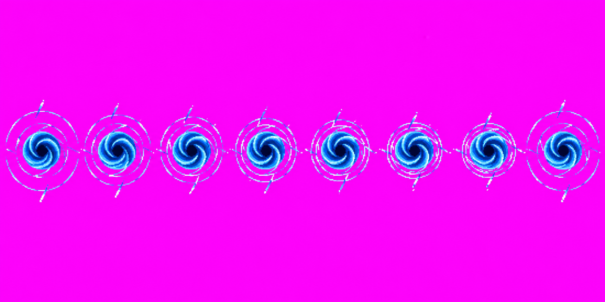
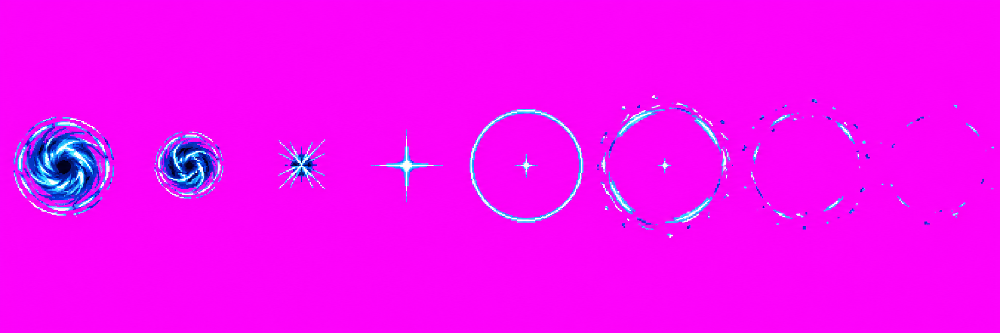
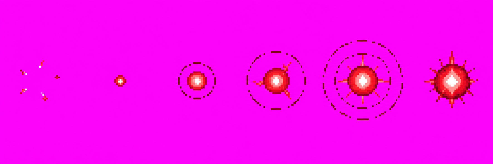
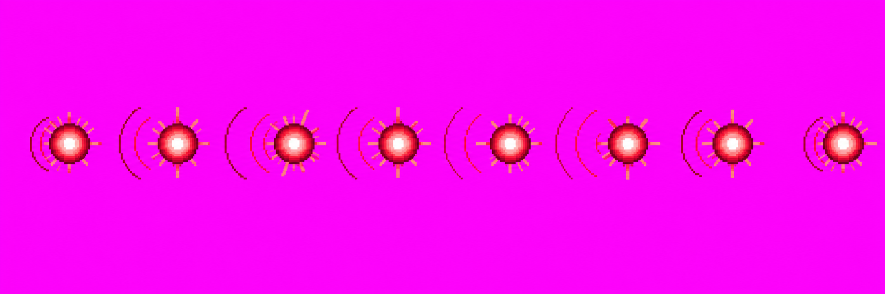
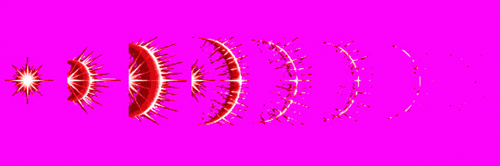

Gojo skills revamp · Batch 1
Blue and Red effects for review · 18 October 2026 · branch art/gojo-skills
Needs your drawing decision; nothing here is approved. The animated stage previews below use the local packed 256px candidate atlas. All five raw sources are preserved beneath them. Technical hold: each source misses the requested strip dimensions and hard palette/background rules. The images measure 1774×887 or 2172×724, contain 51,184–112,645 distinct RGBA colors, and use near-magenta rather than exact #FF00FF backgrounds. The packer removes the near-magenta backgrounds for preview, but the source deviations remain. You can approve the drawings as shown or reject them with feedback; approval will not resolve the technical source holds.
A1 · Lapse: Blue v01 · 1/3 calls
A dense dark attraction point with inward spiral bands and broken rings. The opponent comparison is beside the effect at the same cell size so the scale and open space are visible together.
Packed candidate at 256px cell scale
Standing opponent silhouette, same cell scale
Raw strip

1774×887 · 101,379 colors · background corner RGB(243,15,241) · packed 8/8 frames, scale 0.767, 12 stray specks removed. Spec holds: dimensions, palette, exact background; the orbit/ring changes are subtle.
A2 · Blue collapse v01 · 1/3 calls
The Blue point tightens, flashes, sends a thin shock ring outward, then fades to an empty center.
Packed candidate at 256px cell scale
Raw strip

2172×724 · 74,243 colors · background corner RGB(242,14,241) · packed 8/8 frames, scale 0.789, 11 stray specks removed. Spec holds: dimensions, palette, exact background.
A3 · Red form v01 · 2/3 calls
Crimson sparks gather into a point and grow into the spiky Red orb on Gojo's raised fingertip.
Packed candidate at 256px cell scale
Raw strip

2172×724 · 51,184 colors · background corner RGB(245,15,241) · packed 6/6 frames, scale 0.431, 4 stray specks removed. Spec holds: dimensions, palette, exact background. First call output was lost; displayed candidate is call 2.
A4 · Reversal: Red v01 · 2/3 calls
The compact crimson orb pulses while its hard-edged half-ring wake pushes behind it. The whole effect travels screen-right.
Packed candidate at 256px cell scale, moving screen-right
Raw strip

2172×724 · 61,765 colors · background corner RGB(243,12,241) · packed 8/8 frames, scale 0.895. Spec holds: dimensions, palette, exact background; frame-to-frame wake motion is modest. First call output was lost; displayed candidate is call 2.
A5 · Red burst v01 · 3/3 calls used
A right-directed repulsion dome expands and breaks into fading arcs and specks without a screen-wide white-out.
Packed candidate at 256px cell scale
Raw strip

2172×724 · 112,645 colors · background corner RGB(245,15,244) · packed 8/8 frames, scale 0.65, 69 stray specks removed. Spec holds: dimensions, palette, exact background. Budget exhausted: one output was lost and one empty-prompt call failed; this is the only saved candidate.
The inventory, saved-file hashes, call outcomes, and source holds are recorded in art/characters/gojo/production/skills-revamp-batch1/PROVENANCE.md. These images remain raw/unapproved; the user decision goes through Claude's Gojo skills review.